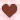
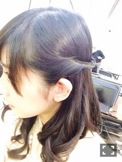

| 2014/04 06 Sun | 斎藤ちはる 京都！！(´>∀<｀)ゝ |
ちはるーむへようこそ！♥︎
smlle☻
土曜日は京都全国握手会！
日曜日は京都個別握手会！
充実してました(o^^o)
全握、なーちゃんと一緒のレーンでした！
隣で握手会してるなーちゃんが
可愛くて可愛くてしょうがなかった(´･_･`)笑
むしろ並びたかったもん(´･_･`)笑
そんななーちゃんのファンの方！
皆さんほんと優しくて、すごく楽しかったです(o^^o)
ありがとうございました(o^^o)
たまには握手会に遊びに来てください
そしてそしてちはるーむめいとの皆さん！
いつも通り皆さん暖かくて安心してました(o^^o)
いつもいつも支えてくれてありがとう(o^^o)
また今度会えるのを待ってます

斎藤家のうた一緒に歌って
なんだか楽しかったり\( ˆoˆ )/
斎藤家のうた大好きだよって
言ってくださってなんだか嬉しかった\( ˆoˆ )/
8th、いいスタートがきれた気がする♡(﹡ˆ ˆ﹡)
(Ӧ)(ӧ)(Ӧ)(Ӧ)(ӧ)〜♬(Ӧ)(ӧ)(Ӧ)(Ӧ)(ӧ)〜♬
今日は個別握手会☻
私服はこんな感じでベージュのワンピース！
好評で嬉しかったなあ〜♡
ワンピース:dazzlin
ネックレス:まいまいのレーンの受け付けのお姉さん、川後からのプレゼント♡

髪の毛はくるくるねじったハーフアップ的な髪型☻
個人的にもお気に入りだし
川後、寧々にも似合ってるって言ってもらえて嬉しかった！！
今日もすごく楽しかったよ！♡
初めましての方も多くて嬉しかったし(﹡ˆ ˆ﹡)
いつも来てくれる方もすごく嬉しかった(﹡ˆ ˆ﹡)
また来てくれるともっと嬉しいな\( ˆoˆ )/
じゃあまたねﾟﾟ\(´O`/)°゜ﾟ
今日の乃木のの聴いてくれた方いますか？ﾟﾟ\(´O`/)°゜ﾟ
ばいるんっ
るんるんっ
ちはるんっ
(´>∀<｀)ゝ